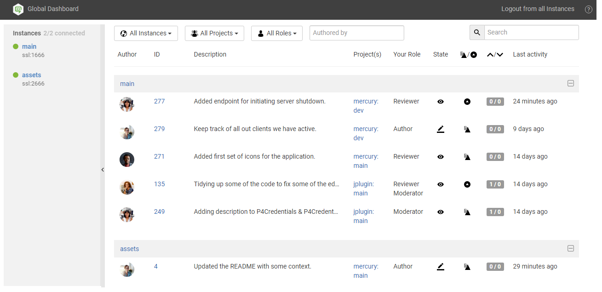
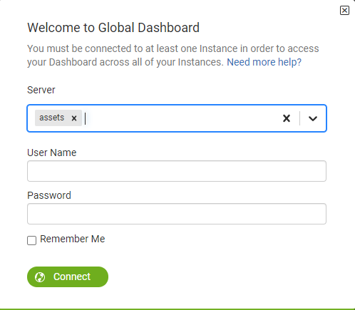
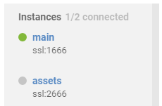
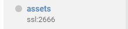
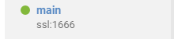
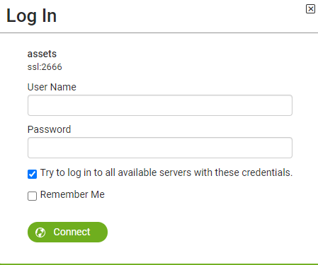
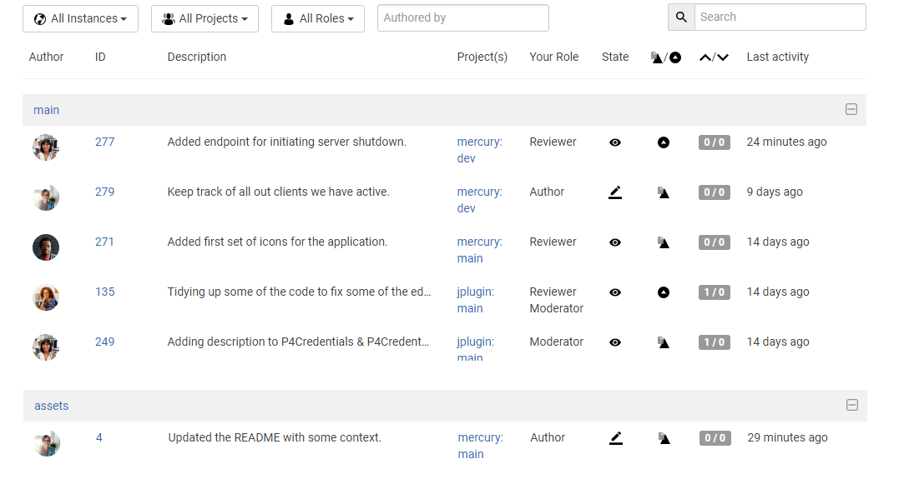
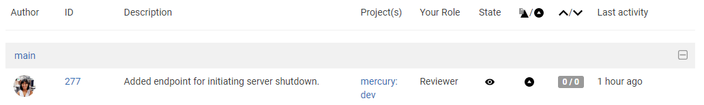

Global Dashboard
Global Dashboard is only available if your Swarm administrator has configured Swarm to connect to more than one Helix server instance. For instructions on how to configure Swarm to connect to multiple-Helix server instances, see Multiple-Helix server instances.
Your Global Dashboard displays a list of reviews that you may need to act on for each of the Helix server instances connected to Swarm.
Open your global dashboard:
- Enter the basic Swarm URL without a Helix server instance name, for example: https://swarm.company.com
- If the log in dialog is displayed:
-
If SSO is mandatory, you will be directed to the sign-in process used by your Identity Provider (IdP).
-
If SSO is optional, log in to Swarm using one of the following methods:
-
Click Log in with SSO, you will be directed to the sign-in process used by your Identify Provider (IdP).
-
Type in your username and password, and click Log in.
-
- Server:
- If your Helix server instances do not share log in credentials, select an individual Helix server instance from the dropdown list.
- If all of your Helix server instances share the same log in credentials, leave set to All available servers.
- Enter your username and password.
- Click Connect.
- Since it is tied to the logged in user, the global dashboard is only populated for the Helix server instances you are logged in to in Swarm.
- If you are already logged in to a Helix server instance in Swarm, the dashboard for that server will be automatically populated when you open or refresh the global dashboard.
Single Sign-On (SSO)
If Helix Authentication Service is configured for your Helix server and Swarm, SSO can be configured by your Swarm admin as either mandatory or optional:
If Helix Authentication Service is configured for your Helix server and Swarm, you must log into the servers individually.
Select the Remember Me check box if you prefer to stay logged in between browser restarts.
Helix servers can enforce maximum login times. You may become logged out even if Remember Me is selected. Swarm administrators can change the maximum login time, see Sessions for details.
Swarm will populate the global dashboard from the Helix server instances it connects to.
The global dashboard is displayed:

The global dashboard is made up of three main areas:
- Toolbar: log in to Helix server instances, log out of all Helix server instances, and open the Swarm help from the global dashboard toolbar.
- Sidebar: Log in/logout of individual Helix server instances and view you profile for any instance that you are logged in to.
- Helix server dashboards: view, filter and search the dashboards of the Helix server instances you are logged in to. Jump directly to a Helix server, review, or project by clicking on a link.
Toolbar
Log in to one or more Helix server instances
Log In is only displayed in the global dashboard toolbar if you are not logged in to any Helix server instances. If Log In is not available, see Log in to a Helix server instance.
- In the global dashboard toolbar, click Log In.
-
If SSO is mandatory, you will be directed to the sign-in process used by your Identity Provider (IdP).
-
If SSO is optional, log in to Swarm using one of the following methods:
-
Click Log in with SSO, you will be directed to the sign-in process used by your Identify Provider (IdP).
-
Type in your username and password, and click Log in.
-
- Server:
- If all of your Helix server instances share the same log in credentials, leave set to All available servers.
- If your Helix server instances do not share log in credentials, select an individual Helix server instance from the dropdown list.
- Enter your username and password.
Select the Remember Me check box if you prefer to stay logged in between browser restarts.
NoteHelix servers can enforce maximum login times. You may become logged out even if Remember Me is selected. Swarm administrators can change the maximum login time, see Sessions for details.
- Click Connect.
Single Sign-On (SSO)
If Helix Authentication Service is configured for your Helix server and Swarm, SSO can be configured by your Swarm admin as either mandatory or optional:

If Helix Authentication Service is configured for your Helix server and Swarm, you must log into the servers individually.
If you have a number of Helix server instances that use the same login credentials, select them one at a time from the dropdown list.
Swarm will populate the global dashboard from the Helix server instances it connects to.
Logout of all Helix server instances
Logout from all instances is only displayed in the global dashboard toolbar if you are logged in to at least one Helix server instance.
- In the global dashboard toolbar, click Logout from all instances.
- When prompted, click Yes to confirm that you want to logout of all of the Helix server instances.
-
If Helix Authentication Service is configured for your Helix server, logging out of Swarm will not invalidate your Identity Provider (IdP) login status. If you try to log back in to Swarm while your IdP status is still valid, you will not be prompted to complete the log in steps.
- If a custom redirect has been configured by your Swarm administrator, you are logged out of all of the Helix server instances by Swarm and then redirected to the URL specified by the administrator.
- Company intranet, extranet, internet, FTP, or Web-mail page
- Industry news website
- Identity Provider page to invalidate your IdP log in status
If require_login is also enabled, Swarm will return you to the login and your IdP will automatically log you back in. In this case log out from your Identity Provider page before logging out from Swarm.
The custom redirect can be set to any internal or external URL, for example:
Sidebar
The Helix servers that Swarm can connect to are listed in the collapsible sidebar on the left of the page. From the server list you can log in/logout from individual Helix servers and view your user profile.

Log in status
- Not logged in to the Helix server instance:
- Logged in to the Helix server instance:


Log in to a Helix server instance
- In the sidebar, hover over the Helix server you want to connect to.
- Click the Log in button
 .
. -
Single Sign-On (SSO)
If Helix Authentication Service is configured for your Helix server and Swarm, SSO can be configured by your Swarm admin as either mandatory or optional:
-
If SSO is mandatory, you will be directed to the sign-in process used by your Identity Provider (IdP).
-
If SSO is optional, log in to Swarm using one of the following methods:
-
Click Log in with SSO, you will be directed to the sign-in process used by your Identify Provider (IdP).
-
Type in your username and password, and click Log in.
-
-
- If you are already logged in to another Helix server that is configured for Helix Authentication Service, your IdP status is valid and you will not be prompted to complete the log in steps.
- Type in your username and password for the Helix server.
- Select the Try to log in to all available servers with these credentials checkbox if you use these credentials for more than one of the Helix server instances. Swarm will not try to log in to any Helix server instances that are configured for Helix Authentication Service, log in to them individually using the instance Log in button in the sidebar.
Select the Remember Me check box if you prefer to stay logged in between browser restarts.
NoteHelix servers can enforce maximum login times. You may become logged out even if Remember Me is selected. Swarm administrators can change the maximum login time, see Sessions for details.
- Select the Try to log in to all available servers with these credentials checkbox if you use these credentials for more than one of the Helix server instances. Swarm will not try to log in to any Helix server instances that are configured for Helix Authentication Service, log in to them individually using the instance Log in button
- Click Connect.

Swarm will populate the global dashboard from the Helix server.
If you selected the Try to log in to all available servers with these credentials checkbox, Swarm will populate the global dashboard for the other servers in the list that it successfully connects to.
Logout of a single Helix server instance
- In the sidebar, hover over the Helix server you want to log out from.
- Click the Gear button to open the dropdown menu.
- Click Logout in the dropdown menu.
-
If Helix Authentication Service is configured for your Helix server, logging out of Swarm will not invalidate your Identity Provider (IdP) login status. If you try to log back in to Swarm while your IdP status is still valid, you will not be prompted to complete the log in steps.
- If a custom redirect has been configured by your Swarm administrator, you are logged out of the Helix server instance by Swarm. You are only redirected to the URL specified by the administrator if you are not logged in to any other Helix server instances on the global dashboard.
- Company intranet, extranet, internet, FTP, or Web-mail page
- Industry news website
- Identity Provider page to invalidate your IdP log in status
If require_login is also enabled, Swarm will return you to the login and your IdP will automatically log you back in. In this case log out from your Identity Provider page before logging out from Swarm.
The custom redirect can be set to any internal or external URL, for example:
Helix server dashboards
The purpose of the global dashboard is to allow you to focus on reviews that need to be done, so that other users are not blocked. The global dashboard lists reviews by Helix server according to the most recently modified first, and shows your role in the review.
A review is displayed on your global dashboard if any of the following criteria are met:
- You are a reviewer or required reviewer, the review status is Needs Review and you have not already voted on it.
- You are a member of a reviewer group or a required reviewer group, the review status is Needs Review and you have not already voted on it. The review will remain on your dashboard even if the group has met its criteria if you have not already voted on it.
- You are the review author and the review status is Needs Revision, or Approved (only if the review is approved but not committed).
- You are a moderator or a member of a moderator group, the review status is Needs Review, the Minimum up votes requirement for the branch is satisfied, and one of the following is true:
- There are no required reviewers.
- All of the required reviewers have up-voted the review.
- You are the last remaining required reviewer for the review.
- You will see the review in your dashboard if the review has not been approved by another moderator from your branch.
- You will be able to Approve and Commit the review if it has been approved by moderators from all of the other branches.
If moderator behavior is configured to require approval from one moderator per branch and the review spans multiple moderated branches:
Example global dashboard showing a number of Helix server dashboards:

Helix server header bars
The dashboard for each Helix server instance is displayed under the header bar for that instance. The header bars are collapsible allowing you to temporarily hide Helix server instances you are not currently interested in.
- Click on the Helix server name in the header to open Swarm for that instance in a new tab.
- Click on the header to the right of the Helix server to collapse the dashboard for that instance. Click again to expand the dashboard for the instance .
Filtering
The global dashboard can be filtered to display only reviews from a particular Helix server instance, project, authored by a particular user, or matching a role. The filter buttons filter all of the instances on the global dashboard. The filter buttons are always in view as you scroll up and down the page so that you can quickly modify the filters and see just the reviews you want to see. Click the Reset button to reset these filters.
Filtering options are:
-
Instances
You can filter by the Helix server instance, limiting results to All Instances or to an individual instance.
-
Projects
You can filter by the project the review is part of, limiting results to All Projects or to an individual project. The Project filter will only show projects for which there are reviews in your dashboard.
-
Roles
You can filter by your specific role in a review, limiting results to reviews for which you are the author, a reviewer, a required reviewer, or a moderator. The Role filter will only show roles for which there are reviews in your dashboard.
-
Authored by
You can filter the reviews to only those that have been authored by a certain user. Type in this field to get a drop down list of users to filter by.
-
Reset (only displayed if one or more filters are set):
Clicking the Reset button resets all dashboard filters back to their defaults.
-
Search
Typing in the search field filters the reviews by description and review ID.
Review fields
The dashboard for each Helix server shows a summary of the information for each review.

Reviews that appear here are those which are waiting for action from you. The information presented should help you prioritize what to work on next.
-
Author
The author of this review.
-
ID
The ID of this review. Click on this to go to the review page.
-
Description
The review description. It may be truncated if it is too long, in which case click on the description to expand it.
-
Project(s)
List of project branches this review covers. A review may span multiple branches and projects. Click on one of them to navigate to the project page for that branch.
-
Your role
The reason this review is in your dashboard. This can be Author, Reviewer, Required Reviewer, or Moderator.
-
State
The current status of the review. This can be Needs Review, Needs Revision, or Approved.
NoteThe Approved state only applies to review authors, it is only shown for a review that has been approved but has not been committed.
-
Type
The type of review. This can be Pre-commit or Post-commit.
-
Votes
The double column of votes displays the number of up votes and down votes for the review.
-
Last activity
The last time that any changes were made to the review, including votes, comments, commits, and file changes.
Navigating directly to a specific Helix server instance in Swarm
If you want to quickly visit a specific Helix server instance in Swarm without going via the global dashboard, include the server name in the URL, for example: https://swarm.company.com/serverA.
Once you are viewing the Helix server in Swarm, Swarm works as a standard single Helix server Swarm system.
- To browse jobs on serverA, navigate to: https://swarm.company.com/serverA/jobs
- To browse reviews on serverB, navigate to: https://swarm.company.com/serverB/reviews
- To view the dashboard for serverB, navigate to https://swarm.company.com/serverB/#actionable-reviews